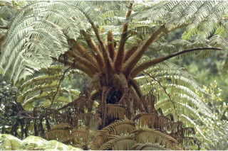
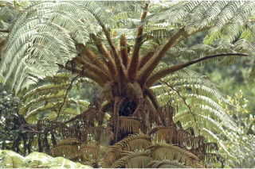
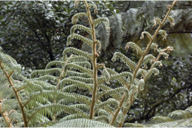
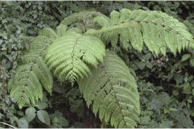
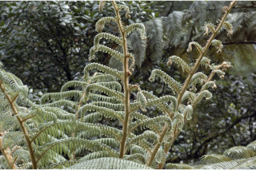
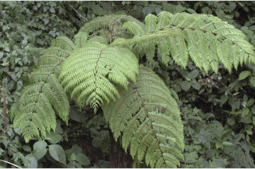

Trees up to 8 m tall.
8 ಮೀ. ಎತ್ತರದವರೆಗಿನ ಮರಗಳು.
Trees up to 8 m tall.
மரங்கள் 8 மீ. உயரம் வரை வளரக்கூடியது.
Trunk greyish brown, densely clothed with scars of fallen leaves.
ತೊಗಟೆ ಬೂದು ಮಿಶ್ರಿತ ಕಂದು ಬಣ್ಣ ಹೊಂದಿರುತ್ತದೆ ಮತ್ತು ಉದುರಿದ ಎಲೆಗಳ ಗುರುತುಗಳಿಂದ ಆವೃತವಾಗಿರುತ್ತದೆ
Trunk greyish brown, densely clothed with scars of fallen leaves.
மரத்தின் நடுத்தண்டு சாம்பல்-ப்ரவுன் நிறமானது, இலைகள் உதிர்ந்ததால் உண்டாகும் தழும்புகளுடன் காணப்படுகின்றன.
Crown of fronds at the top of the trunk; fronds bipinnate, 200 cm long; stipes ca. 100 cm long, with stout base, long brown hairy throughout; pinnae ca. 12 pairs, alternate, distinctly petiolate; pinnules 7.5-12 x 1.5-2.5 cm, pinnatifid, lobes alternate, oblong, 0.7-1.5 x 0.2-0.4 cm, margin crenate, membranous; nerves forked.
ಪರ್ಣಾಂಗಳ ಮುಕುಟ ಕಾಂಡದ ಅಗ್ರದಲ್ಲಿರುತ್ತವೆ;ಪರ್ಣಾಂಗಗಳು ದ್ವಿಗರಿ ರೂಪದವುಗಳಾಗಿದ್ದು 200 ಸೆಂ.ಮೀ. ಉದ್ದವಿರುತ್ತವೆ;ಆಧಾರ ಕಾಂಡ ಅಂದಾಜು 100 ಸೆಂ.ಮೀ. ಉದ್ದವಿರುತ್ತವೆ ಹಾಗೂ ದಪ್ಪವಾದ ಬುಡ ಹೊಂದಿದ್ದು,ಎಲ್ಲಾ ಕಡೆ ಕಂದು ಬಣ್ಣದ ರೋಮಗಳಿಂದ ಆವರಿಸಿರುತ್ತದೆ;ಗರಿಗಳು ಅಂದಾಜು 12 ಜೋಡಿಗಳಿದ್ದು ಪರ್ಯಾಯವಾಗಿ ಜೋಡಿತಗೊಂಡಿದ್ದು ಪ್ರಮುಖವಾದ ತೊಟ್ಟಿನ ಸಮೇತವಿರುತ್ತವೆ; ಪಿಚ್ಚಕಗಳು 7.5-12X1.5-2.5 ಸೆಂ.ಮೀ. ಗಾತ್ರವಿದ್ದು, ಗರಿರೂಪಿಗಳಾಗಿರುತ್ತವೆ, ಹಾಲೆಗಳು ಪರ್ಯಾಯ ರೀತಿಯಲ್ಲಿ ಜೋಡಿತಗೊಂಡಿರುತ್ತವೆ ಮತ್ತು ಚತುರಸ್ರಾಕಾರದಲ್ಲಿದ್ದು,0-7-1.5X0.2-0.4 ಸೆಂ.ಮೀ. ಗಾತ್ರವಿದ್ದು,ದುಂಡೇಣಿನ ಅಂಚನ್ನು ಹೊಂದಿದ್ದು,ತೆಳು ಪದರದ ರೂಪವನ್ನು ಹೊಂದಿರುತ್ತವೆ;ನಾಳಗಳು ಕವಲುಗೊಂಡಿರುತ್ತವೆ.
Crown of fronds at the top of the trunk; fronds bipinnate, 200 cm long; stipes ca. 100 cm long, with stout base, long brown hairy throughout; pinnae ca. 12 pairs, alternate, distinctly petiolate; pinnules 7.5-12 x 1.5-2.5 cm, pinnatifid, lobes alternate, oblong, 0.7-1.5 x 0.2-0.4 cm, margin crenate, membranous; nerves forked.
பனை வகைப் போன்று நடுத்தண்டு உச்சியில் இலைகளுடையது; இலைகள் இருமுறை கிளைத்த சிறகுவடிவக்கூட்டிலை (பைபின்னேட்), 200 செ.மீ. நீளமானது; ஸ்டைப் 100 செ.மீ. நீளமானது, தடித்தவை, தளத்தில் நீளமான ப்ரவுன் நிறமான உரோமங்களுடையது; பின்னே 12 ஜோடிகள், மாற்றுஅடுக்கமானவை, சிற்றிலையின் காம்புடையது; பின்னுல்ஸ் 7.5-12 x 1.5-2.5 செ.மீ., சிறகு போன்று காணப்படுபவை, பிளவுகள் மாற்றுஅடுக்கமானவை, நீள்சதுர வடிவானது, 0.7-1.5 X 0.2-0.4 செ.மீ., அலகின் விளிம்பு பிறை போன்ற பற்களுடையது, ஜவ்வு போன்றது; நரம்புகள் கிளைத்தவை.
Spore producing structures ‘sori’ spherical seated on nerves forks.
ಬೀಜಾಣುಗಳನ್ನು ಉತ್ಪತ್ತಿ ಮಾಡುವ ಬೀಜಕದಾನಿಗಳು ದುಂಡಾಗಿದ್ದು ನಾಳಗಳ ಕವಲುಗಳ ಮೇಲೆ ಆಸೀನವಾಗಿರುತ್ತವೆ.
Spore producing structures ‘sori’ spherical seated on nerves forks.
நரம்புகள் கிளைத்த பகுதியில் ஸ்பொர்ஸ் உருவாக்கும் அமைப்பான கோள வடிவானது சொரை காணப்படுகின்றன.

 



 


